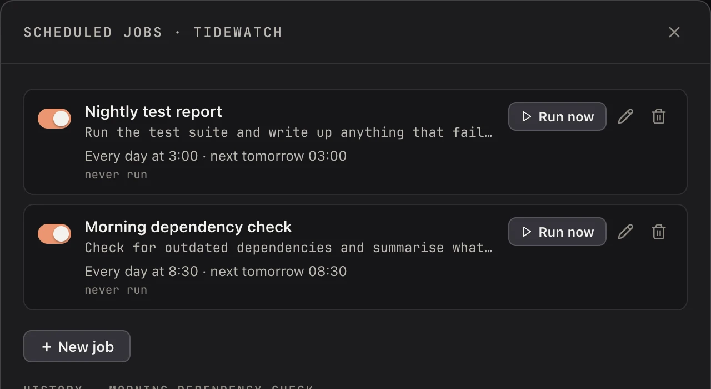
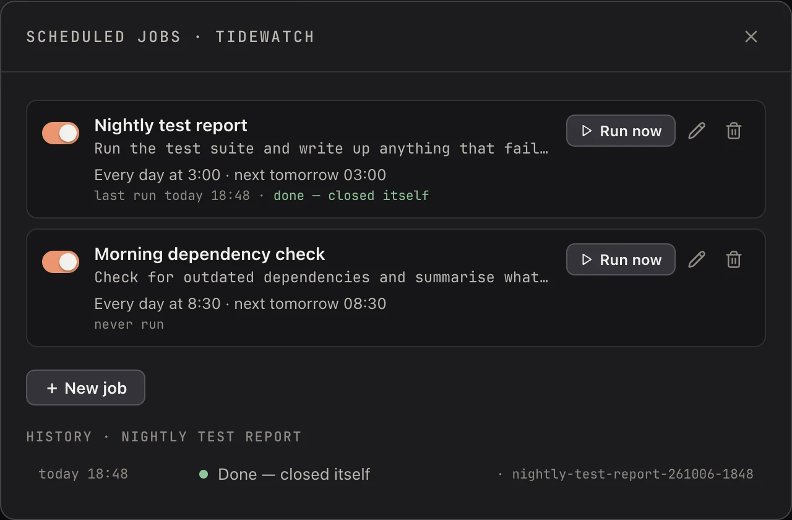

Sessions on a timer
Some agent work should just happen: run the tests every night, check for old packages every morning. You should not have to be there to start it. Koloft starts a fresh session on a timer, hands it the first message you wrote, and leaves the rest to you. When a run finishes, it waits in the sidebar for you, unless the job says When done ▸ Close it. Then the run cleans up after itself.
Set up a job
Right-click a folder in the sidebar and pick Scheduled jobs… from the menu. Each job starts a Claude or a Codex session (in a remote folder, Claude only). For each one you choose:
-
a name, and what to run: any message, or a skill's
/name. A Claude run's row in the sidebar shows the job's name; a Codex run is named by Codex itself. - when: every so many minutes or hours, every day at a time, or on the days you pick
- the model, and how hard it thinks
- the permission it gets
- when it is done: Leave it open (the default), or Close it
| permission | what it means |
|---|---|
| Same as my other sessions | Follows your Accounts setting. A Claude job skips every check when Multi-account mode and Skip permission prompts are both on in Accounts. If not, it asks before risky steps, like your other sessions. |
| Let it edit files without asking | It may change files without asking. |
| Never ask | It never asks. It can change files anywhere on this Mac, not only in the run's folder. |

An agent can manage jobs too, with koloft cron. See
Agents can use Koloft too.
Where it runs
Git is the tool that keeps a history of your files. A worktree is a new copy of the folder, on its own branch, so your own files are never touched. Each run's copy and branch stay until you remove them, or until a job set to Close it removes its own.
the time comes
|
v
does git track the folder?
| |
yes no
| |
v v
new worktree, session in the
session in it folder itself
When it is done
The job's When done row has two choices:
| when done | what happens |
|---|---|
| Leave it open | The default. The run stays in the sidebar for you to read. |
| Close it | Once the run has finished all its work, its tab, row, worktree and branch go, so the next run is not skipped. |
In a folder git does not track, only the tab and the row go; nothing on disk is touched.
A job set to Close it says "closes when done" in the list. When its run closes, a small message pops up: "⏰ name finished and closed".

A run stays open, and says why, when:
- it stops to ask you something, such as asking for your OK
- it still has work running
- closing it would lose a change that is not committed, or a commit
- a file in its Workbench is not saved
Each job keeps a short history of its runs. A line there reads one of:
| history line | what it means |
|---|---|
| Done — waiting for you | The run finished and is still open in the sidebar. |
| Done — closed itself | The run finished and Close it cleaned it up. |
| Done — not closed: what is left | The run finished, but something keeps it open. The line says what. Koloft looks again a little later. |
| Closed by you | You closed the run yourself. |
| Ended — Koloft quit | Koloft quit while the run was open. |
| Missed — Koloft was closed or asleep | The time came while Koloft was closed, or while the Mac slept more than five minutes past it. |
| Skipped — the last run was still open | The time came, but the last run was still in the sidebar. |
| Could not start — why | The run never began. The line says why. |
When a run is missed or skipped more than once in a row, the line says how many times, such as "Missed 3 times — Koloft was closed or asleep".
Close it works the same for a Claude job, a Codex job, and a Claude job in a remote folder. On a remote machine, Koloft cannot see programs the run left going in the background there.
What it never does
-
type into your session(it hands the first message toclaudeorcodexonce, as the session starts, and nothing after that) -
run a missed time later(Jobs run only while Koloft is open. A time that came while Koloft was closed is missed, even by a minute. If the Mac was asleep, a run up to five minutes late still happens; later than that, it is missed.) -
pile up runs(if the last run is still open, the next one is skipped; a run that closed itself is not in the way)
next page -> Several accounts, one pool